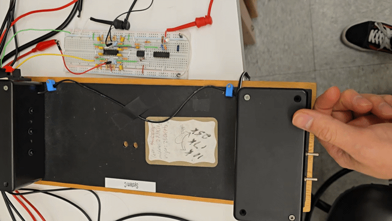
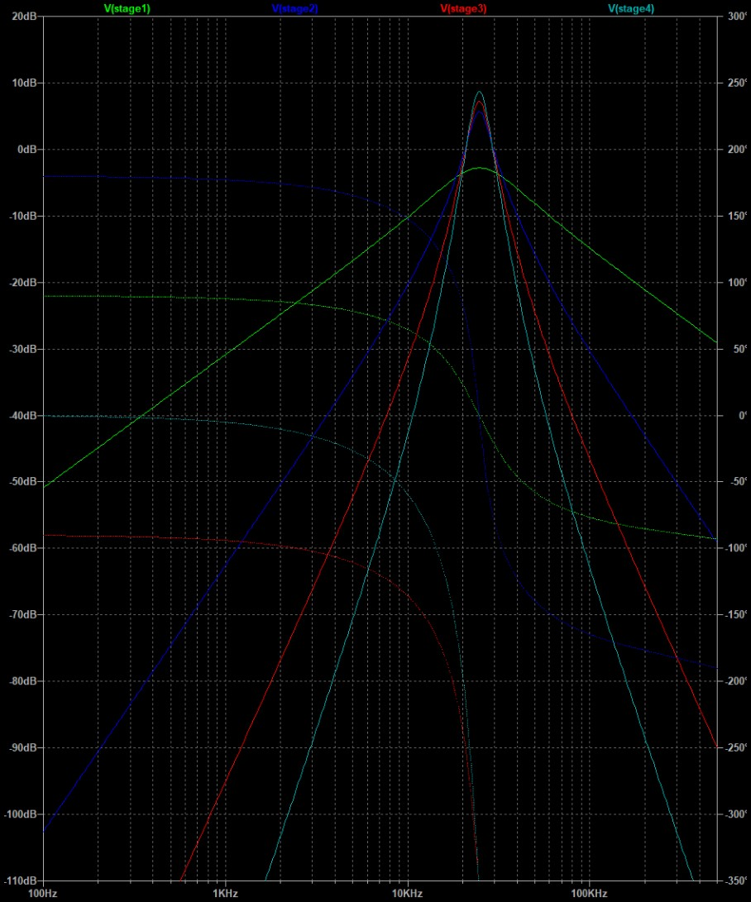
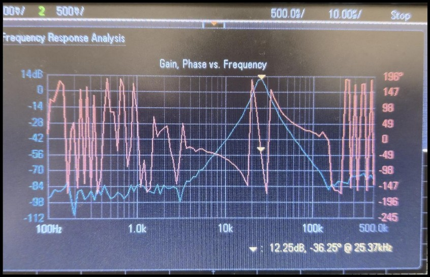

25 kHz Active Bandpass Filter
Active Filter Design | Op-Amp Circuitry | Signal Processing
System Overview
As part of a team-based Frequency Detector project, I was responsible for designing a module to isolate a 25 kHz audio signal modulated over an IR transmission. I designed and built an 8th-order cascaded Sallen-Key active bandpass filter (utilizing fixed 15 nF capacitors) to strictly pass the 25 kHz signal while heavily attenuating adjacent 10 kHz and 17 kHz signals. A secondary peak detector and comparator stage were added to trigger a physical LED indicator.

System Design & Simulation
The active filter was constructed using four cascaded 2nd-order stages, designed with a center frequency (f0) of 25 kHz. The theoretical peak gain was verified via LTspice simulation before physical construction. The steep roll-off creates a massive 27.7 dB separation between the target signal and the 17 kHz noise.


Hardware Verification
The physical circuit successfully replicated the simulated frequency response. Frequency Response Analysis (FRA) confirmed a robust peak gain at 25 kHz, validating the mathematical model and component selection.


Full Live Demonstration
This extended video demonstrates the physical circuit successfully illuminating the indicator LED only when the 25 kHz target frequency is applied, fully rejecting the adjacent 10 kHz and 17 kHz signals across different test states.
Project Documentation & Source Files
For a complete breakdown of the transfer functions, stage-by-stage gain calculations, and component selection (including standard resistor mapping like 424.4Ω to available values), please review the final engineering report.